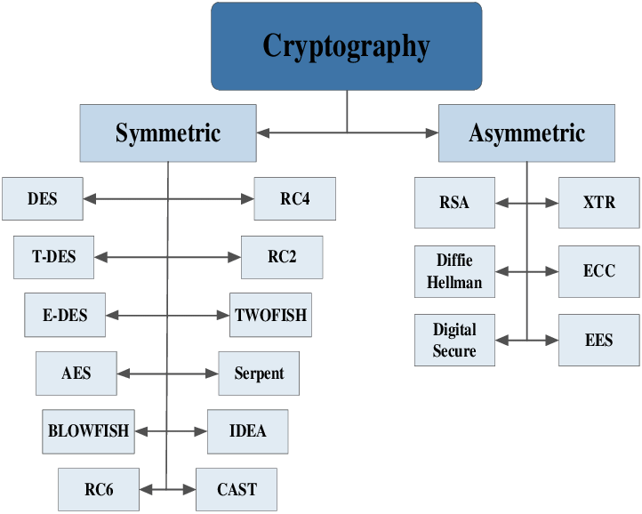
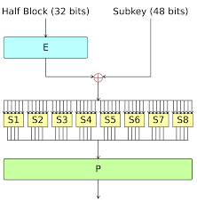

Subject

REVIEW OF RELATED WORKS
This paper presents a detailed study of the popular Encryption Algorithms such as RSA, DES, 3DES and AES. The use of internet and network is growing rapidly, so there are more requirements to secure the data transmitted over different networks using different services. To provide the security to the network and data different encryption methods are used (Nadeem, 2006). In this paper, a survey on the existing works on the Encryption techniques has been done. To sum up, all the techniques are useful for real-time Encryption. Each technique is unique in its own way, which might be suitable for different applications and has its own significance. According to research done and literature survey it can be found that AES algorithm is most efficient in terms of speed, time, throughput, and avalanche effect. The security provided by these algorithms can be enhanced further, if more than one algorithm is applied to data. Our future work will explore this concept and a combination of algorithms will be applied either sequentially or parallel, to setup a more secure environment for data storage and retrieval. 2.1 Overview of Various Encryption Algorithms Thakur et al. (2011) discussed a fair comparison between three most common symmetric key cryptography algorithms: DES, AES and Blowfish. The main concern was the performance of the algorithms under different settings, the presented comparisons takes into consideration the behavior and performance of the algorithms when different data loads are used. The comparison was made on the basis of these parameters: speed, block size, and key size. Simulation program was implemented using java programming. It was concluded that blowfish has better performance than other common encryption algorithms used. Marwaha et al. (2013) discussed three algorithms DES, 3DES and RSA. DES and 3DES are symmetric key cryptographic algorithms and RSA is an asymmetric key cryptographic algorithm. Algorithms have been analyzed on their ability to secure data, time taken to encrypt data and throughput the algorithm requires. Performance of different algorithms was different according to the inputs. It was concluded that confidentiality and scalability provided by 3DES over DES and RSA is much higher and makes it suitable even through DES consumes less power memory and time to encrypt and decrypt the data but on security from DES can be easily broken by brute force technique as compared to 3DES and RSA, making it the last secure algorithm. Alam et al. (2013) discussed performance and efficiency analysis of different block cipher algorithms (DES, 3DES, CAST-128, BLOWFISH, IDEA and RC2) of symmetric key cryptography. Block cipher algorithms has been compared based on the factors: input size of data(in the form of text, audio and video), encryption time, decryption time, throughput of encryption and decryption of each block cipher and power consumption. It was concluded that 3DES has more power consumption and less throughput than the DES due to its triple phase characteristics. Saini (2014) make a performance analysis of various algorithmsDES, AES, RC2, Blowfish, 3DES and RC6. It was concluded from the simulation outcomes that best algorithm are those that are well known and well documented because they are well tested and well-studied. A good cryptographic system strikes a balance between what is possible and what is acceptable. Alanazi et al. (2010) has done the comparative analysis of three Encryption Algorithms (DES, 3DES and AES) within nine factors such as Key Length, Cipher Type, Block Size, Security, Possible Keys, Possible ASCII printable character keys and Time required to check all possible keys at 50 billion keys per second etc. Study shows that AES is better than DES and 3DES.

DES Algorithm
It was developed in the early 1975 at IBM labs by Horst Fiestel. The DES was approved by the NBS (National Bureau of Standards, now called NIST –National Institute of Standards and Technology) in 1978. The DES was standardized by the ANSI (American National Standard Institute) under the name of ANSI X3.92, better known as DEA (Data Encryption Algorithm). The DES was once a predominant symmetric-key algorithm for the encryption of electronic data. But now it is an outdated symmetric key data encryption method. DES uses 56 bits key for encryption and decryption. It completes the 16 rounds of encryption on each 64 bits block of data. Data encryption standard works on a particular principle. Huang (2008) explains that Data encryption standard is a symmetric encryption system that uses 64-bit blocks, 8 bits (one octet) of which are used for parity checks (to verify the key's integrity). Each of the key's parity bits (1 every 8 bits) is used to check one of the key's octets by odd parity, that is, each of the parity bits is adjusted to have an odd number of '1's in the octet it belongs to. The key therefore has a real useful length of 56 3bits, which means that only 56 bits are actually used in the algorithm. So it would take a maximum of 256 or 72,057,594,037,927,936 attempts to find the correct key (Coppersmith, 1994). DES uses 16 rounds of a Feistel like encryption method to encrypt plain text. A key schedule is used to derive 16 keys for the successive rounds of encryption from the original key. The block diagram of one round of DES is shown in Figure 2. Even so, DES remained a trusted and widely used encryption algorithm through the mid1990s (Islam et al., 2008).

DES Algorithm
In cryptography techniques, Triple Data Encryption Standard (3DES) is the common name for the Triple Data Encryption Algorithm (TDEA) symmetric-key block cipher, which applies the Data Encryption Standard (DES) encryption algorithm three times to each data block. Triple-DES is also proposed by IBM in 1978 as a substitute to DES. So, 3DES is simply the DES symmetric encryption algorithm, used three times on the same data. Three DES is also called as T-DES. It uses the simple DES encryption algorithm three times to enhance the security of encrypted text (Stallings, 1999).
RSA Algorithm
The RSA (Rivest-Shamir-Adleman) algorithm is the most important public-key cryptosystem. It is best known and widely used public key scheme. It uses large integers like 1,024 bits in size. It has only one round of encryption. It is asymmetric block cipher. RSA is an algorithm used by modern computers to encrypt and decrypt messages. RSA is an asymmetric cryptographic algorithm. Asymmetric means that there are two different keys are used in encryption and decryption process (Kakkar and Singh, 2012). This is also called public key cryptography, because one of them can be shared with everyone and another key must be kept private. It is based on the factoring problem. RSA stands for Ron Rivest, Adi Shamir and Leonard Adleman, who developed and publicly described it in 1978. The RSA algorithm can be used for both public key encryption and digital signatures. Its security is based on the difficulty of factoring large integers. Following algorithm is used in RSA; (i) Choose p and q (ii) Compute n = p * q (iii) Compute φ(n) = (p - 1) * (q - 1) (iv) Choose e such that 1 < e < φ(n) and e and n are co-prime. (v) Compute a value for d such that (d * e) % φ (n) = 1. (vi) Public key is (e, n) (vii) Private key is (d, n) (viii) For encryption C=me(mod n) and decryption m =cd(mod n). Hence, by following above algorithm the plain text in encrypted form or cipher text and then decrypted from cipher text to plain text.